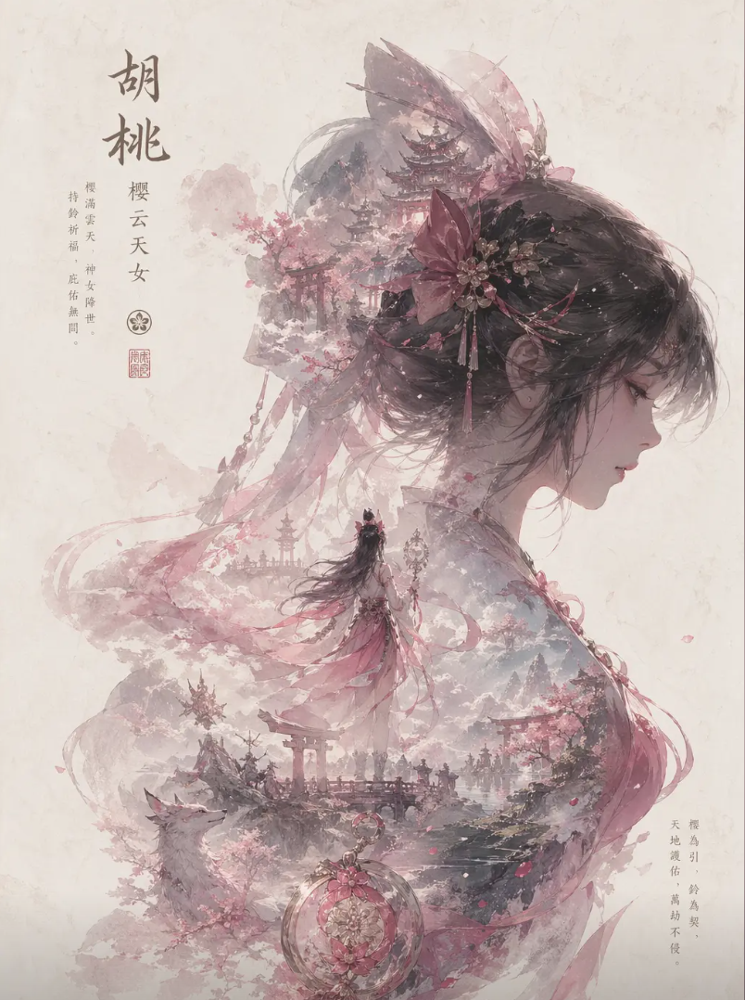

土御门胡桃是《永劫无间》中核心支援治疗型英雄，定位 “团队续航保障”，因可爱外形和关键辅助能力成为热门角色，尤其适合新手组队。
背景故事
日轮国土御门家族唯一继承人，打破 “女子不能学阴阳术” 传统，偷学古籍展现天赋，爷爷私下传授。10 岁时误放妖谷大妖，爷爷牺牲封印后，她救治武田信忠并得其剑术指导。
为证明女性可当大阴阳师，前往聚窟洲夺取不朽面具，性格天真却内心坚韧。
技能机制
F 奥义（核心治疗）：
【庇护】：连接队友 / 魂冢持续治疗，左键瞬移击飞敌人，右键净化中断；
【庇护・增援】：减治疗，增 20% 攻击，右键净化后增 40% 攻击 1 秒（进攻队首选）；
【庇护・守护】：减治疗，增 20% 减伤，右键净化后大幅减伤 1.5 秒（防守队首选）。
V 奥义（自保 / 反打）：
【净天地】：范围净化减疗 / 燃烧，回复队友护甲；
【镇魂铃】：减速沉默敌人，倒地时可自救（新手推荐）。
被动：治疗量随生命值降低提升，残血时续航更强。
玩法定位
团队核心：优先保输出位，用 F 连接治疗 + 瞬移支援，V 奥义化解控制 / 减疗；
操作简单：技能易上手，新手可快速掌握；
生存技巧：避免正面冲突，利用瞬移拉扯，残血靠被动和镇魂铃自保；
武器搭配：推荐远程（弓 / 鸟铳）或灵活近战（双节棍 / 匕首），适配辅助节奏。
